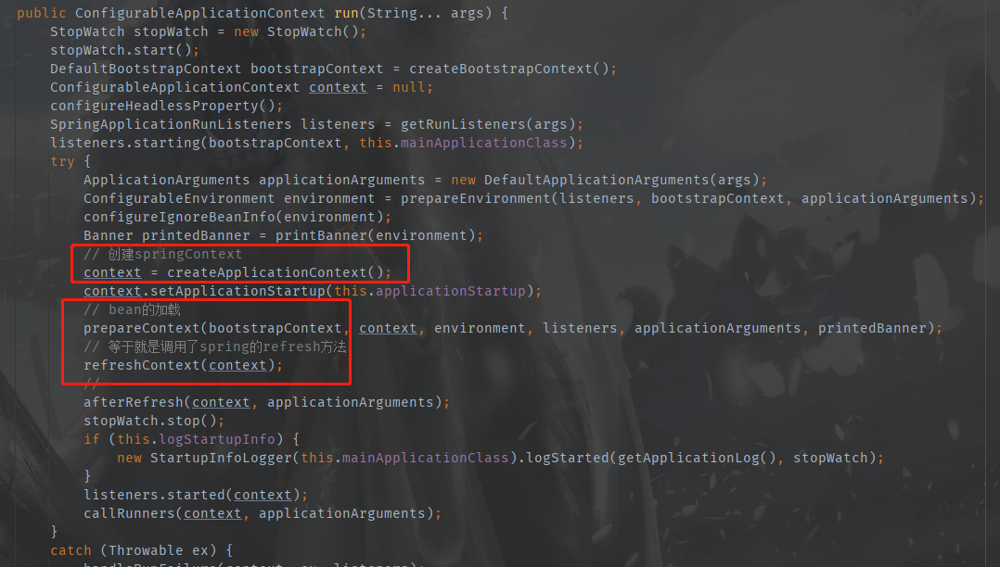
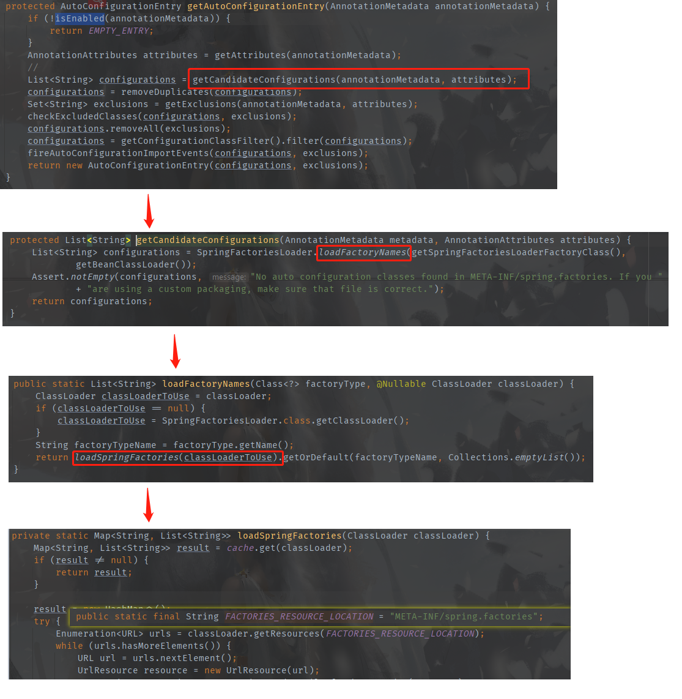
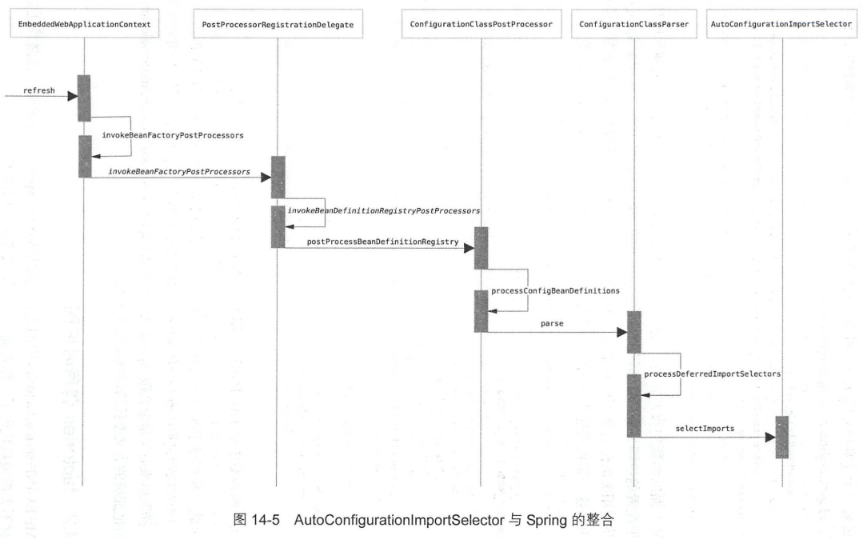
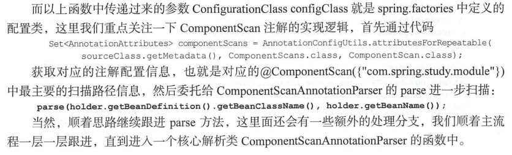

public ConfigurableApplicationContext run(String... args) {
StopWatch stopWatch = new StopWatch();
stopWatch.start();
DefaultBootstrapContext bootstrapContext = createBootstrapContext();
ConfigurableApplicationContext context = null;
configureHeadlessProperty();
SpringApplicationRunListeners listeners = getRunListeners(args);
listeners.starting(bootstrapContext, this.mainApplicationClass);
try {
ApplicationArguments applicationArguments = new DefaultApplicationArguments(args);
ConfigurableEnvironment environment = prepareEnvironment(listeners, bootstrapContext, applicationArguments);
configureIgnoreBeanInfo(environment);
Banner printedBanner = printBanner(environment);
// 创建springContext
context = createApplicationContext();
context.setApplicationStartup(this.applicationStartup);
// bean的加载
prepareContext(bootstrapContext, context, environment, listeners, applicationArguments, printedBanner);
// 等于就是调用了spring的refresh方法
refreshContext(context);
//
afterRefresh(context, applicationArguments);
stopWatch.stop();
if (this.logStartupInfo) {
new StartupInfoLogger(this.mainApplicationClass).logStarted(getApplicationLog(), stopWatch);
}
listeners.started(context);
callRunners(context, applicationArguments);
}
catch (Throwable ex) {
handleRunFailure(context, ex, listeners);
throw new IllegalStateException(ex);
}
try {
listeners.running(context);
}
catch (Throwable ex) {
handleRunFailure(context, ex, null);
throw new IllegalStateException(ex);
}
return context;
}


protected final SourceClass doProcessConfigurationClass(
ConfigurationClass configClass, SourceClass sourceClass, Predicate<String> filter)
throws IOException {
if (configClass.getMetadata().isAnnotated(Component.class.getName())) {
// Recursively process any member (nested) classes first
processMemberClasses(configClass, sourceClass, filter);
}
// Process any @PropertySource annotations
for (AnnotationAttributes propertySource : AnnotationConfigUtils.attributesForRepeatable(
sourceClass.getMetadata(), PropertySources.class,
org.springframework.context.annotation.PropertySource.class)) {
if (this.environment instanceof ConfigurableEnvironment) {
processPropertySource(propertySource);
}
else {
logger.info("Ignoring @PropertySource annotation on [" + sourceClass.getMetadata().getClassName() +
"]. Reason: Environment must implement ConfigurableEnvironment");
}
}
// Process any @ComponentScan annotations
Set<AnnotationAttributes> componentScans = AnnotationConfigUtils.attributesForRepeatable(
sourceClass.getMetadata(), ComponentScans.class, ComponentScan.class);
if (!componentScans.isEmpty() &&
!this.conditionEvaluator.shouldSkip(sourceClass.getMetadata(), ConfigurationPhase.REGISTER_BEAN)) {
for (AnnotationAttributes componentScan : componentScans) {
// The config class is annotated with @ComponentScan -> perform the scan immediately
Set<BeanDefinitionHolder> scannedBeanDefinitions =
this.componentScanParser.parse(componentScan, sourceClass.getMetadata().getClassName());
// Check the set of scanned definitions for any further config classes and parse recursively if needed
for (BeanDefinitionHolder holder : scannedBeanDefinitions) {
BeanDefinition bdCand = holder.getBeanDefinition().getOriginatingBeanDefinition();
if (bdCand == null) {
bdCand = holder.getBeanDefinition();
}
if (ConfigurationClassUtils.checkConfigurationClassCandidate(bdCand, this.metadataReaderFactory)) {
parse(bdCand.getBeanClassName(), holder.getBeanName());
}
}
}
}
// Process any @Import annotations
processImports(configClass, sourceClass, getImports(sourceClass), filter, true);
// Process any @ImportResource annotations
AnnotationAttributes importResource =
AnnotationConfigUtils.attributesFor(sourceClass.getMetadata(), ImportResource.class);
if (importResource != null) {
String[] resources = importResource.getStringArray("locations");
Class<? extends BeanDefinitionReader> readerClass = importResource.getClass("reader");
for (String resource : resources) {
String resolvedResource = this.environment.resolveRequiredPlaceholders(resource);
configClass.addImportedResource(resolvedResource, readerClass);
}
}
// Process individual @Bean methods
Set<MethodMetadata> beanMethods = retrieveBeanMethodMetadata(sourceClass);
for (MethodMetadata methodMetadata : beanMethods) {
configClass.addBeanMethod(new BeanMethod(methodMetadata, configClass));
}
// Process default methods on interfaces
processInterfaces(configClass, sourceClass);
// Process superclass, if any
if (sourceClass.getMetadata().hasSuperClass()) {
String superclass = sourceClass.getMetadata().getSuperClassName();
if (superclass != null && !superclass.startsWith("java") &&
!this.knownSuperclasses.containsKey(superclass)) {
this.knownSuperclasses.put(superclass, configClass);
// Superclass found, return its annotation metadata and recurse
return sourceClass.getSuperClass();
}
}
// No superclass -> processing is complete
return null;
}


@Override
public ConditionOutcome getMatchOutcome(ConditionContext context, AnnotatedTypeMetadata metadata) {
List<AnnotationAttributes> allAnnotationAttributes = annotationAttributesFromMultiValueMap(
metadata.getAllAnnotationAttributes(ConditionalOnProperty.class.getName()));
List<ConditionMessage> noMatch = new ArrayList<>();
List<ConditionMessage> match = new ArrayList<>();
for (AnnotationAttributes annotationAttributes : allAnnotationAttributes) {
// 核心逻辑
ConditionOutcome outcome = determineOutcome(annotationAttributes, context.getEnvironment());
(outcome.isMatch() ? match : noMatch).add(outcome.getConditionMessage());
}
if (!noMatch.isEmpty()) {
return ConditionOutcome.noMatch(ConditionMessage.of(noMatch));
}
return ConditionOutcome.match(ConditionMessage.of(match));
}